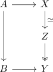
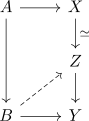
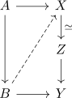
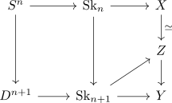
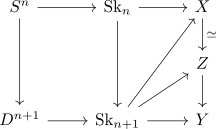
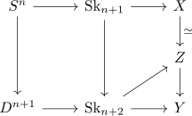

lift of a cw inclusion and weak equivalence
Proposition
Let

be a lifting problem, where $A \rightarrow B$ is a relative cw inclusion and $X \rightarrow Z$ a weak homotopy equivalence and the composition $X \rightarrow Z \rightarrow Y$ a serre fibration
TFAE:
- there exists a lift

- there exists a lift

Proof
1) $\implies$ 2)
We will lift $\mathrm{Sk}_n \rightarrow X$ inductively.
write

Then it follows that this admits a lift by cell attaching and lift of a weak homotopy equivalence up to compatible homotopy

Now repeat for

this commutes by ???
2) $\implies$ 1)
follows from the composition